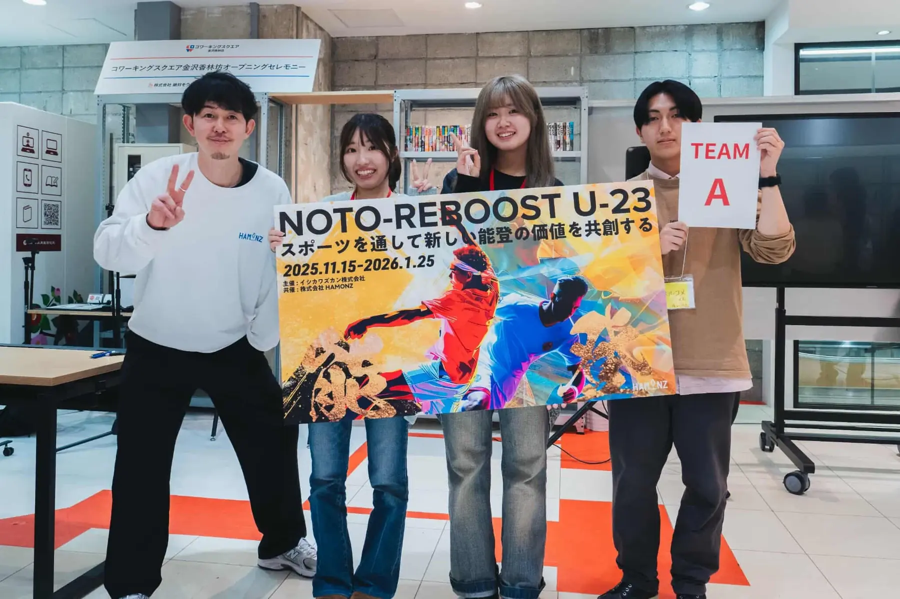
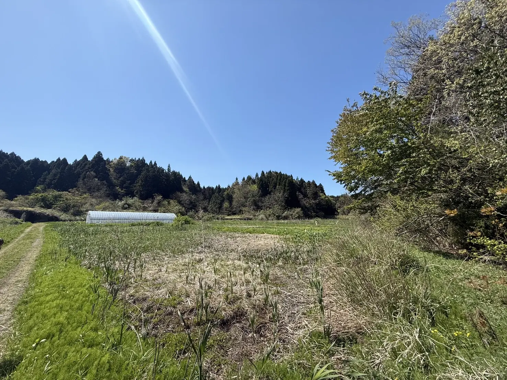
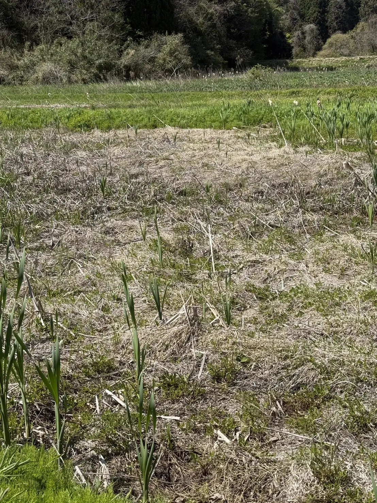

OUR START
NOTO-REBOOST U-23で出会った3人が、能登に継続して関わる形を考えました。
震災ボランティアとして現地を訪れた経験、能登の景色への思い、豪雨で泥にまみれた写真を洗った記憶。異なる背景を持つ3人が、「一時的な関わりで終わらせず、能登に残る形をつくりたい」と考えました。
挑戦は、たいてい泥臭いものです。だからこそ、最初の一歩を、自分たちの手で形にします。

NOTO / SUZU / FIELD REGENERATION
NOTO Re:Bloomは、能登で増えている耕作放棄地を、毎年少しずつでも再生していくプロジェクトです。土地を整え、人が入り、関係が生まれ、翌年度以降の活用へつながる流れをつくります。


PROJECT / 概要
目的は、単発のイベントではありません。耕作放棄地を見つけ、整え、人が入るきっかけをつくり、その後の管理や活用につなげる。NOTO Re:Bloomは、その一連の流れを能登で育てていきます。
地域の方と相談し、活用の可能性がある遊休農地・耕作放棄地を探します。
草刈り、簡易整備、動線確認を行い、人が入れる状態に近づけます。
ドロンコ運動会などを通じ、学生・地域・企業が同じ土地に関わる時間をつくります。
栽培、管理、景観づくりなど、その土地に合った継続活用を考えます。
HOW IT WORKS
支援者が知りたいのは、「お金がどこへ行くのか」。NOTO Re:Bloomでは、使い道を土地の変化に沿って整理します。
まず人が近づける状態へ。
動線・水・ぬかるみを確認。
学生・地域・企業が同じ場所へ。
栽培・管理・活用へつなげる。
SUPPORT IMPACT
支援の意味を、できるだけ具体的に。NOTO Re:Bloomでは、草刈り・簡易整備・安全確認・運営準備・広報・翌年度以降の活用準備まで含め、1㎡あたり約300円を暫定的な目安にしています。
土地を一度きれいにして終わるのではなく、人が入り、関心が生まれ、翌年度以降の活用へつながる状態をつくるための目安です。
土地を整えるだけなら、1㎡あたり約100円という公的補助制度上の目安もあります。けれど、私たちが目指すのは、草を刈って終わることではありません。
人が安全に入れる環境をつくり、学生・地域・企業が関わるきっかけを生み、次の季節につながる状態まで整える。その一歩を、1㎡ずつ積み重ねます。
数字だけでは見えにくい支援の意味を、畳・駐車場・教室・コートなど、身近なものに置き換えて確かめられます。
約9.72㎡ / 支援目安 2,916円
約1坪。最初の小さな入口をつくる広さです。
約6畳。人が立ち止まり、作業や記録ができる区画です。
約10坪。整備の成果が目に見え始める広さです。
駐車場約8台分。人が集まる場所の核をつくれます。
1㎡あたり約300円は、NOTO Re:Bloom独自の暫定目安です。草刈り、簡易整備、安全確認、運営準備、広報、翌年度以降の活用準備を含めて算出しています。実際の費用は、土地の状態、整備範囲、必要な機材、安全対策等によって変動します。会場確定後、費用内訳は順次公開します。
AREA LIBRARY
「10㎡」や「100㎡」と言われても、実感はなかなかわきません。そこで、NOTO Re:Bloomでは、支援で動く面積を、畳、坪、駐車場、教室、コート、プールなど、イメージしやすい“もの”に置き換えて見せています。
気になるカードを押すと、上のスライダーもその広さに近い金額へ連動します。まずは、自分にとってわかりやすい大きさから、このプロジェクトを想像してみてください。
数字を眺めるより、広さを思い浮かべる。支援の実感を高めるための、小さな面積図鑑です。
寝転がれるくらいの、最小単位の広さ。
目安：486円住宅の広さでよく見る、基本の単位。
目安：993円人が立ち止まり、作業や記録ができる広さ。
目安：2,916円車1台がちょうど収まる身近な広さ。
目安：3,750円少し広めの居室。使い方が想像しやすい広さ。
目安：3,888円一人暮らしの部屋くらいのイメージ。
目安：6,000円人が集まって作業できる広さが見えてきます。
目安：18,900円コート1面分。区画の大きさが一気に想像しやすくなります。
目安：24,522円広い一画を、はっきり“場”として感じられるサイズです。
目安：78,261円学校のプールくらい。まとまった一枚の土地を思い描けます。
目安：93,750円※ 面積のたとえは、不動産表示の1畳＝1.62㎡、1坪＝約3.31㎡を基準に、駐車場は2.5m×5m、教室は約63㎡、バドミントンコートは13.4m×6.1m、テニスコートは23.77m×10.97m、25mプールは25m×12.5mを目安として算出しています。
HOW TO JOIN
見る人が知りたいのは、「自分に何ができるのか」。NOTO Re:Bloomは、資金だけでなく、紹介・発信・当日の参加・専門的な助言を必要としています。
DATA / WHY NOW
全国的な荒廃農地の広がり、再生の余地、そして奥能登で進んできた担い手の減少。公的資料をもとに、背景をわかりやすく整理します。
全国の荒廃農地面積
再生利用が可能と見込まれる荒廃農地
石川県の荒廃農地面積
奥能登の農業経営体
再生できる可能性のある土地を、どう使い続けるかが課題です。
25.7万haのうち、9.8万haは整地などにより再び耕作できる可能性があります。
奥能登の農業経営体は、2010年から2020年にかけておよそ半減しました。
※ 全国・石川県の荒廃農地データは農林水産省資料、奥能登の農業経営体数は農林業センサス等をもとに整理。数値はサイト上の理解促進のために丸めています。
FIELD / 会場候補
初年度の会場は、珠洲市内の遊休農地を中心に調整中です。現在は、珠洲市上黒丸の候補地を含め、アクセス、安全面、整備費、翌年度以降の活用可能性を確認しています。
MUDDY, TOGETHER, BLOOM
目的は、耕作放棄地に人が関わるきっかけをつくること。楽しさを入口に、学生・地域・企業が同じ土地に入り、翌年度以降の活用へつながる関係を育てます。
チームでつなぐ、最初の一歩。
力を合わせて、ぐっと引く。
笑いながら、最後まで走る。
泥も気持ちも、みんなで運ぶ。
競技の形式・チーム編成は、参加人数・年齢構成・当日の土地状況を踏まえ、安全を最優先に調整します。
FOR SUPPORTERS
支援者が知りたいのは、想いだけではなく「何に使われるのか」「誰が進めるのか」「その後どうなるのか」。NOTO Re:Bloomでは、支援の使い道と進捗をできるだけ見える形で共有します。
土地整備、安全管理、広報、翌年度以降の活用準備など、費用内訳を順次公開します。
整備前、準備中、当日、その後の土地の様子まで、サイトやSNSで記録します。
地域の方と相談しながら、来年度以降の栽培・管理・活用へつなげます。
ROADMAP
最初の1か所目を確かな成功事例にし、地域・企業・学生が関わり続けるモデルを能登各地へ広げます。
珠洲市上黒丸の候補地を含め、地域の方と相談中です。
アクセス・水・安全面を確認し、費用内訳を整理します。
地域団体・企業・学生ボランティアと接点をつくります。
イベント後の管理・栽培・活用まで見据えて進めます。
モデル事業として、土地再生と地域交流の成功事例をつくる。
協力者・協賛企業を広げ、珠洲市内で取り組みを拡大する。
地域ごとの想いをつなぎ、再生の仕組みを能登全体へ展開する。
OUR START
震災ボランティアとして現地を訪れた経験、能登の景色への思い、豪雨で泥にまみれた写真を洗った記憶。異なる背景を持つ3人が、「一時的な関わりで終わらせず、能登に残る形をつくりたい」と考えました。
挑戦は、たいてい泥臭いものです。だからこそ、最初の一歩を、自分たちの手で形にします。

PARTNERSHIP
ご協力は、単なるイベント費ではありません。草刈り、簡易整備、安全管理、記録発信、翌年度以降の活用準備まで、土地を次に進める基盤になります。
ご希望に応じ、企業名・ロゴ・リンクを掲載します。
協賛内容に応じ、ロゴを見える形で残します。
写真と実施内容をまとめた報告をお届けします。
運営参加、現地見学、メディア取材も歓迎します。
MATERIALS
活動の背景や協賛内容、今後の計画をまとめた資料も公開しています。
FAQ
参加・協賛・取材に関する基本情報です。詳細はフォームまたはメールからお問い合わせください。
現在、珠洲市内の遊休農地を中心に調整中です。上黒丸の候補地を含め、アクセス、安全面、整備費、翌年度以降の活用可能性を確認しています。
可能です。広報協力、物品協力、専門的な助言、地域団体や企業の紹介、当日の運営参加も大きな支援になります。
当日の運営、参加者誘導、広報、記録撮影、事前準備などを想定しています。経験がなくても関われる形にします。
いいえ。ドロンコ運動会は、耕作放棄地に人が入るための入口です。目的は、毎年少しずつでも耕作放棄地を再生し、翌年度以降の活用へつなげることです。
CONTACT
協賛、連携、学生ボランティア、取材、土地や団体の紹介など、関わり方は一つではありません。少しでも関心を持っていただけた方は、サイトからご連絡ください。